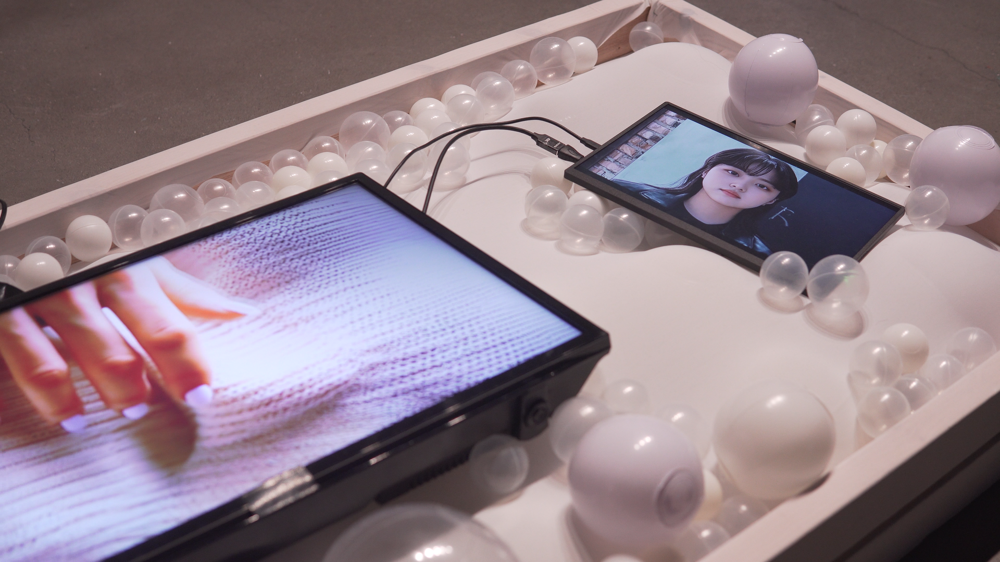
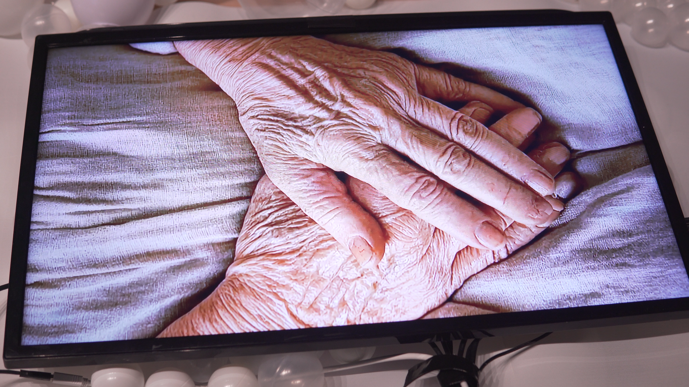

A fictional family assembled from one person's data.
Directed By AI is a film-and-installation experiment in which personal facial and vocal data become the material for a fictional mother and sister. Diffusion-based imagery, AI-assisted writing, and transformed voice are brought into a single narrative.
What the viewer sees
The audience encounters intimate family characters whose faces and voices are mediated by the maker's own source data, while the story moves through inherited fear and emotional distance.
What I directed and built
I developed and directed the AI-assisted film and installation process, combining facial reference data, diffusion-driven character images, altered vocal performance, and language-model-assisted narrative iteration.
Creative decision
The central choice was to keep the technical transformation visible as a question of identity and authorship. Generated likeness is used in service of a specific family story, rather than displayed as a model capability alone.




